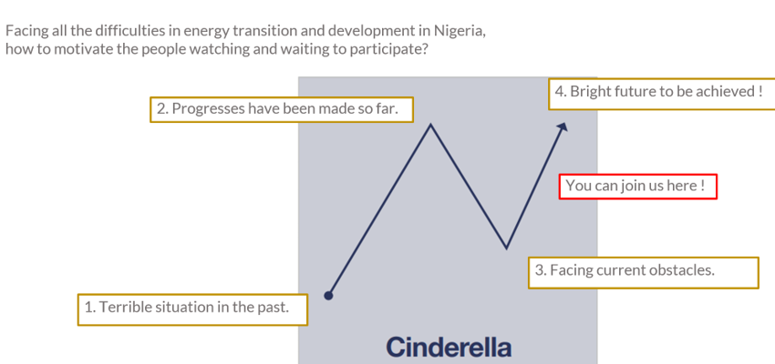
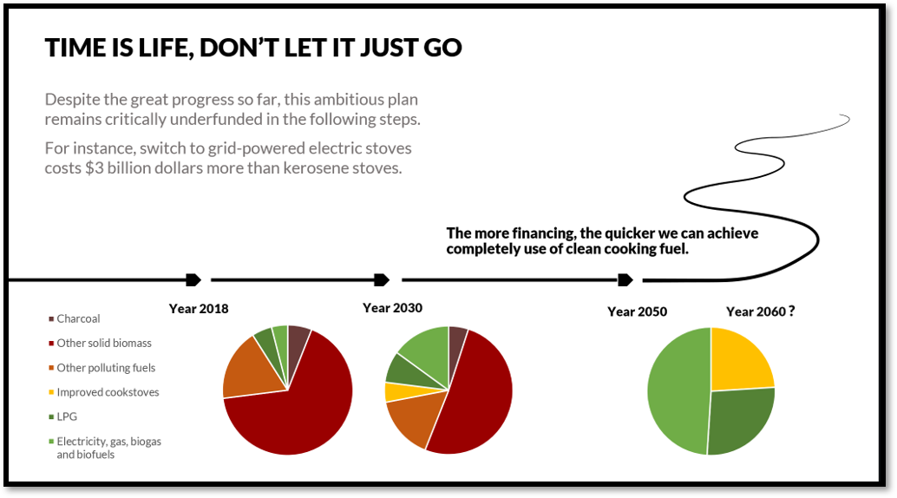
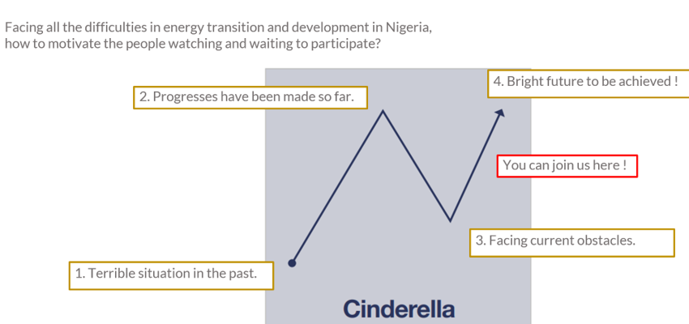
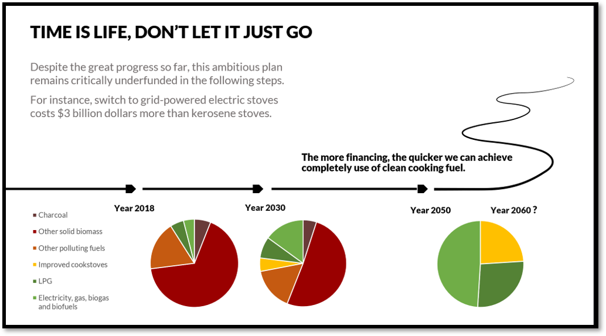

DESIGN DATA NARRATIVE
DESIGN RESEARCH / NARRATIVE RESEARCH / 2024
Why finding narratives from datasets?
"There are countless forms of narrative in the world... First of all, narrative starts with the very history of mankind; there is not, there has never been anywhere, any people without narrative" (Barthes & Duisit, 1975, p. 237).
 My thinking on this question starts from the following inferences: Datasets are the collection of all observations*, while the ubiquity of narrative provides a universal interpretation method for them. Designers refer to narratology and semiotics as theoretical base, to match data visualization functions to usage scenarios. The above categorization construct the usage scenarios of data visualization narratives from designers Hans-Wihelm E. and Scott B.
A data set may contain many samples, variables, and sets. They are visualized as a shape in a chart, like the plot of a story. In the illustration above, a combination of numbers and symbols tells a complete story to the audience, such as:
My thinking on this question starts from the following inferences: Datasets are the collection of all observations*, while the ubiquity of narrative provides a universal interpretation method for them. Designers refer to narratology and semiotics as theoretical base, to match data visualization functions to usage scenarios. The above categorization construct the usage scenarios of data visualization narratives from designers Hans-Wihelm E. and Scott B.
A data set may contain many samples, variables, and sets. They are visualized as a shape in a chart, like the plot of a story. In the illustration above, a combination of numbers and symbols tells a complete story to the audience, such as:
“This video got 100 likes.”
……and if there are 100 videos of the creator, the data of likes can form a plot from the dataset, for example:
"A creator who works tirelessly, receiving more and more likes within a year."
 In practice, the situation can be more complicated, resulting in multiple interpretations and differences, such as this data event:
In practice, the situation can be more complicated, resulting in multiple interpretations and differences, such as this data event:
"The labor cost execution rate of company A in September"
I met this problem during the iteration of an digital human resource data dashboard project. This data is a complex statistic that measures the implementation effect of the human management plan, but the original designer ignored the fact that in individual cases, this value would be greater than 100%, thus used the wrong chart.
 A plot is also a narrative of events, the emphasis falling on causality. The relationships between the data constitute the plot; they structure the conflict and resolution of the story, conveying to the reader the reality reflected in the dataset. In statistics, flow charts are widely used to express causality and correlation.
A plot is also a narrative of events, the emphasis falling on causality. The relationships between the data constitute the plot; they structure the conflict and resolution of the story, conveying to the reader the reality reflected in the dataset. In statistics, flow charts are widely used to express causality and correlation.
In the example on the right, I combined two vivid charts to create such a plot to transform the information of the data into persuasiveness:
"Nigeria's energy structure is very bad and has caused many deaths in the past.”
 For a specific story, the narrative structure and its intent depend on the needs. In the practice of the 'Nigeria Energy Transition Plan' data visualization, I employ the narrative structure of Cinderella to present the development plan for a better tomorrow to the investors, setting the stage for their participation. The chart depicts a group of people striving to improve their living conditions. Although they have achieved some initial results, they still face significant challenges. Therefore, now is the opportune moment for savvy investors to step in and make pivotal investments.

In the aforementioned project, I referred to psychological theories to help the narrative impress investors. According to attribution theory by Weiner, B. (1985), “......people tend to attribute their successes internally (to their own abilities or efforts), and their failures externally (to external factors beyond their control)......which could motivate them to continue supporting the project during tough times, believing that the core reasons for initial success remain unchanged.”

For a specific story, the narrative structure and its intent depend on the needs. In the practice of the 'Nigeria Energy Transition Plan' data visualization, I employ the narrative structure of Cinderella to present the development plan for a better tomorrow to the investors, setting the stage for their participation. The chart depicts a group of people striving to improve their living conditions. Although they have achieved some initial results, they still face significant challenges. Therefore, now is the opportune moment for savvy investors to step in and make pivotal investments.

In the aforementioned project, I referred to psychological theories to help the narrative impress investors. According to attribution theory by Weiner, B. (1985), “......people tend to attribute their successes internally (to their own abilities or efforts), and their failures externally (to external factors beyond their control)......which could motivate them to continue supporting the project during tough times, believing that the core reasons for initial success remain unchanged.”

Reference
*The definitions of datasets vary, and this one is taken from the Australian Bureau of Statistics. https://www.abs.gov.au/statistics/understanding-statistics/statistical-terms-and-concepts/data
Barthes, R. (1977) Image, Music, Text. Trans. Stephen Heath. New York: Hill and Wang.
Berinato S. (2016) Visualizations That Really Work, Harvard Business Review
Eckert H. W. (2022) Storytelling with data: gaining insights, developing strategy and taking corporate communications to a new level
Forster, E.M. (1927). Aspects of the Novel. Harcourt Brace & Company.
Weiner, B. (1985). "An Attributional Theory of Achievement Motivation and Emotion." Psychological Review, 92(4), 548-573.